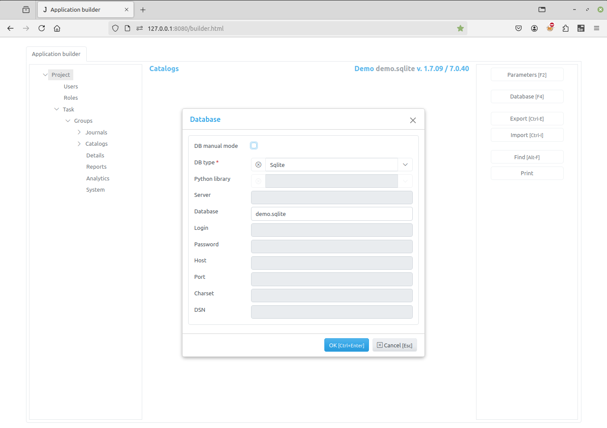

Database¶
{kind=link}
In this dialog project database parameters are displayed. When they have been changed and OK button is clicked, the Application builder will check connection to the database and if it failed to connect an error will be displayed.
Note
When any Database parameter is changed, except DB manual update, the server application must be restarted for changes to take effect.
If DB manual update checkbox is unchecked (default), then when changes to an item, that have an associated database table, are saved, this database table is automatically modified. For example, if we add a new field to some item in the Item Editor Dialog , the new field will be added to the associated database table. If this checkbox is checked, no modifications to the database tables are made.
The DB manual update was renamed to DB manual mode in more recent version.
Note
Please be very careful when using this option.
Examples of database setups¶
Adapted from Jam.py Design Tips
Jam.py supports many different database servers. For example PostgreSQL, MariaDB, MySQL, MSSQL, Oracle, Firebird, IBM, SQLite and SQLite with SQLCipher.
If you are developing a small project or something you don’t plan to deploy in a production environment, SQLite is generally the best option as it doesn’t require running a separate server. However, SQLite has many differences from other databases, so if you are working on something substantial, it’s recommended to develop with the same database that you plan on using in production.
In addition to a database backend, we need to make sure the Python database bindings are installed.
If using PostgreSQL, the
psycopg2orpsycopg2-binarypackage is needed.If using MySQL or MariaDB, the
MySQLdbfor Python 2.x is needed. For Python 3.x, themysql-connector-pythonandmysqlclientpackage is needed, as well as database client development files.If using MSSQL, the
pymssqlis needed.If using Oracle, the cx_Oracle is needed, as well as Python headers (development files).
If using SQLCipher,
sqlcipher3-binarypackage is needed for Linux. There is a standalone DLL for Windows available.If using IBM,
ibm_dbandibm_db_dbipackage is needed.If using Firebird,
fdbpackage is needed.
Using MySQL on Windows is supported, please visit MySQL deployment on Windows.
Even though Jam.py supports all databases from the above, there is no guarantee that some specific and/or propriety database functionality is supported. Here we name a few.
{kind=link}
{kind=link}
{kind=link}
{kind=link}
{kind=link}
{kind=link}